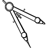

Numa folha qualquer eu desenho um amarelo
E com cinco ou seis retas é fácil fazer um
Corro o lápis em torno da mão e me dou uma
E se faço chover, com dois riscos tenho um
Se um pinguinho de tinta cai num pedacinho azul do papel
Num instante imagino uma linda gaivota a voar no céu
Vai voando, contornando a imensa curva norte-sul
Vou com ela viajando Havaí, Pequim ou Istambul
Pinto um barco a vela branco navegando
É tanto céu e mar num
Entre as nuvens vem surgindo um lindo rosa e grená
Tudo em volta colorindo, com suas luzes a piscar
Basta imaginar e ele está partindo, sereno e lindo
E se a gente quiser ele vai pousar
Numa folha qualquer eu desenho um de partida
Com alguns bons amigos bebendo de bem com a vida
De uma América a outra consigo passar num segundo
Giro um simples  e num círculo eu faço o
Um menino caminha e caminhando chega no muro
E ali logo em frente a esperar pela gente o futuro está
E o futuro é uma que tentamos pilotar
Não tem tempo nem piedade nem tem hora de chegar
Sem pedir licença muda nossa vida
Depois convida a ou
Nessa estrada não nos cabe conhecer ou ver o que virá
O fim dela ninguém sabe bem ao certo onde vai dar
Vamos todos numa linda passarela
De uma que um dia enfim
Descolorirá
Numa folha qualquer eu desenho um amarelo
Que descolorirá
E com cinco ou seis retas é fácil fazer um
Que descolorirá
Giro um simples e num círculo eu faço o mundo
Que descolorirá